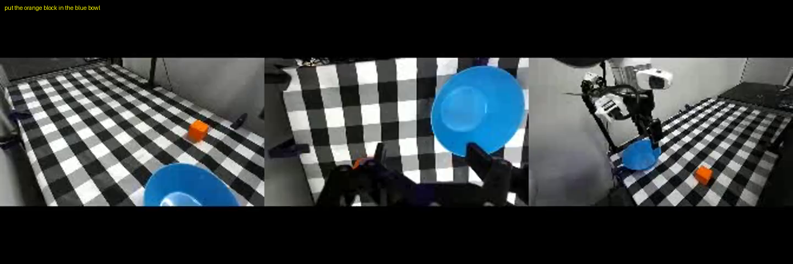
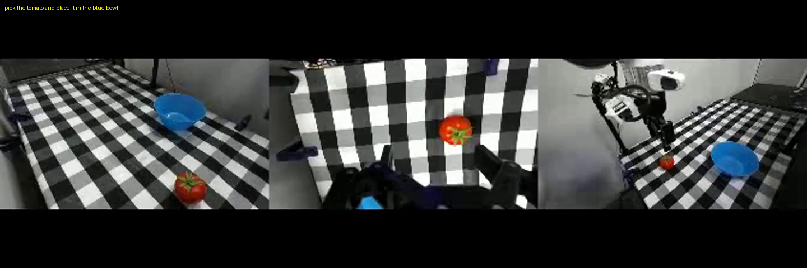
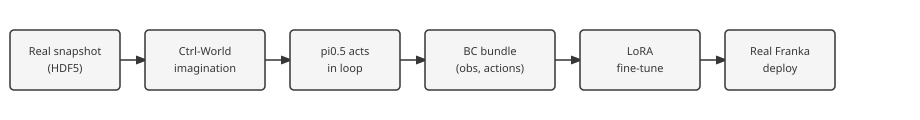
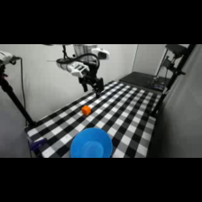
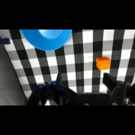
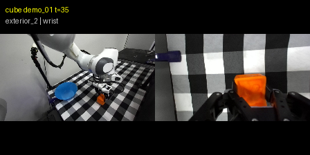
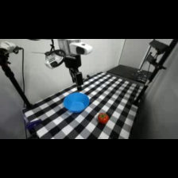
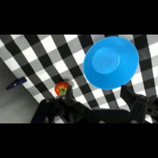
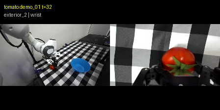

1. Background and Setup
Vision-language-action policies such as pi0.5 generalize across many manipulation tasks, but performance can become unreliable under new objects, camera viewpoints, lighting, and workspace layouts. Collecting additional human teleoperation for every new task is slow and requires physical robot access.
We ask: Can Ctrl-World synthetic rollouts improve pi0.5 real-world performance on tasks where the base policy is partially capable but unreliable?
- Inputs: pretrained pi0.5, Ctrl-World checkpoint, real-Franka snapshot observations, natural-language instruction.
- Outputs: task-adapted pi0.5 checkpoint; real-robot success rate and trajectory quality.
- Crux: imagined frames must stay visually grounded with the recorded action chunks so behavior cloning does not learn spurious visual-action associations.
Prompt: put the orange block in the blue bowl
Real teleop demo
Ctrl-World imagined

Prompt: pick the tomato and place it in the blue bowl
Real teleop demo
Ctrl-World imagined

2. Approach
We extended an existing pi0.5 + Ctrl-World pipeline to a real Franka lab setup in four stages:
- Task selection — evaluated candidate tasks in sim and on hardware; kept cube and tomato pickup where Ctrl-World produced usable rollouts.
- Imagined rollouts — pi0.5 acts in the loop; Ctrl-World predicts multi-camera video; swept prompts, guidance, and camera layouts (
scripts/run_sweep.sh). - BC bundles — each policy decision stores exterior + wrist RGB (224×224), joint/gripper state, and a 15-step DROID action chunk (
scripts/bc_dataset.py). - Fine-tuning — LoRA on pi05_droid with optional image augmentation; EMA-loss thresholds 0.10 / 0.04 / 0.015 for early stopping (
scripts/run_with_loss_threshold.py). Full fine-tuning checkpoints exist in the portfolio but were not evaluated on real hardware.

What we started with: pretrained pi0.5 (OpenPI), Ctrl-World checkpoint, DROID norm stats.
What we added: rollout orchestration, BC bundle format, threshold-based training, and a 42-checkpoint real-robot portfolio under real_robot_checkpoints/.



Sweep gallery (representative configs)



3. Evaluation and Results
3.1 Definition of success
- Primary: fraction of real Franka trials with successful pick (and place when applicable).
- Secondary: trajectory smoothness, stability, directness (qualitative from rollouts).
- Data efficiency: compare synthetic Ctrl-World FT vs teleoperation FT with matched trajectory counts.
3.2 Experimental setup and baselines
- Base pi0.5 — pretrained checkpoint, no task FT.
- Ctrl-World finetuned pi0.5 — FT on successful imagined rollouts (16 cube / 24 tomato demos in primary bundles).
- Teleoperation finetuned pi0.5 — FT on hand-collected trajectories (30 cube / 24 tomato); checkpoints
*_handin portfolio.
3.3 Main results
| Task | Base pi0.5 | Ctrl-World FT | Teleop FT | Notes |
|---|---|---|---|---|
| Pick up cube | 90% | 90% | TBD | Equal success; smoother trajectories after FT. |
| Pick up tomato | 60% | 100% | TBD | Large gain from synthetic FT. |

Headline: smoother execution at saturated 90% success.

Headline: +40 percentage points absolute success.
3.4 Interpretation
Ctrl-World fine-tuning helps most when the base policy is already partially capable but unstable. Cube pickup was near ceiling (90%), so binary success did not move, yet motion quality improved. Tomato pickup had more headroom; synthetic trajectories provided task-specific supervision that transferred to hardware.
Qualitative: finetuned cube policy reaches the same success rate with less jerky approach and retreat.
Qualitative: base policy sometimes misses the grasp; Ctrl-World FT policy completes the pick reliably in our trial set.
3.5 Qualitative comparison (three-way)
3.6 Conclusion
Ctrl-World synthetic rollouts are a viable source of behavior-cloning data for adapting pi0.5 on real manipulation tasks. Effects are largest when the base policy is not already saturated. Careful rollout curation and real-robot evaluation remain essential.
4. Failure Cases and Limitations
Some imagined rollouts exhibit object drift, morphing, or prompt inconsistency — corrupting observation-action pairs. With only ~16–24 successful trajectories per task, we used LoRA exclusively to limit overfitting; full fine-tuning was deferred.
- Only two manipulation tasks evaluated.
- Limited number of real robot trials per condition.
- Successful synthetic rollouts were curated (pipeline not fully automatic).
- Visual sim-to-real gap between Ctrl-World and the physical scene.
- Long-horizon tasks not yet tested.
5. Team Responsibilities
- Real robot setup and evaluation
- Ctrl-World rollout generation and parameter sweep
- pi0.5 fine-tuning and checkpoint management
- Teleoperation baseline and result analysis
TODO: assign names to roles before final submission.
6. References
- Ctrl-World — controllable world model for robot manipulation.
- Physical Intelligence pi0.5 / OpenPI.
- DROID dataset and action format.
- LoRA: Low-Rank Adaptation of Large Language Models (Hu et al.).